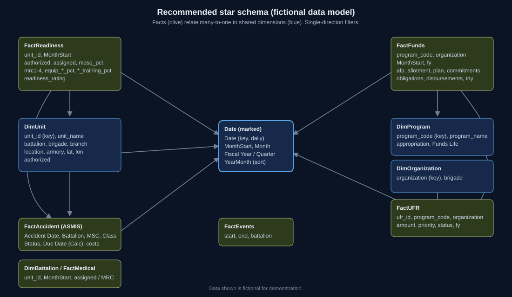

No .pbix file is included. A .pbix can only be produced in Power BI Desktop, so the kit contains everything needed to rebuild the report instead: about 30–60 minutes following the build steps. The same fictional CSVs that drive the web dashboards are bundled for import.
Report theme
Validated against Microsoft's Power BI report theme JSON schema (2.159). Dark for screens; light for briefing slides and print. Import with View › Themes › Browse for themes.
Snippets
Data model (star schema)
